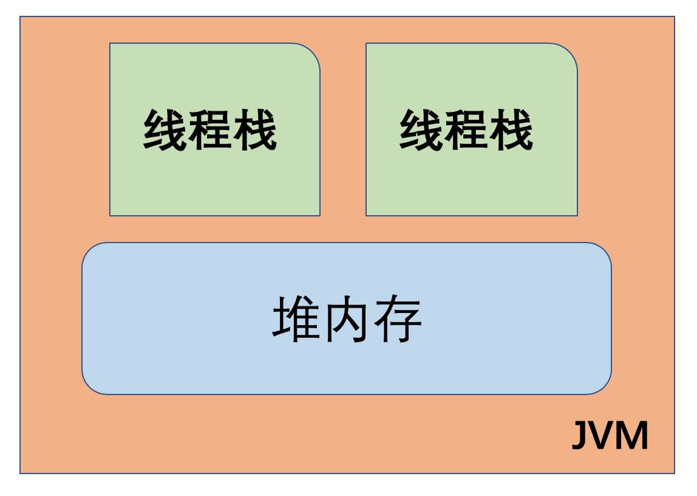
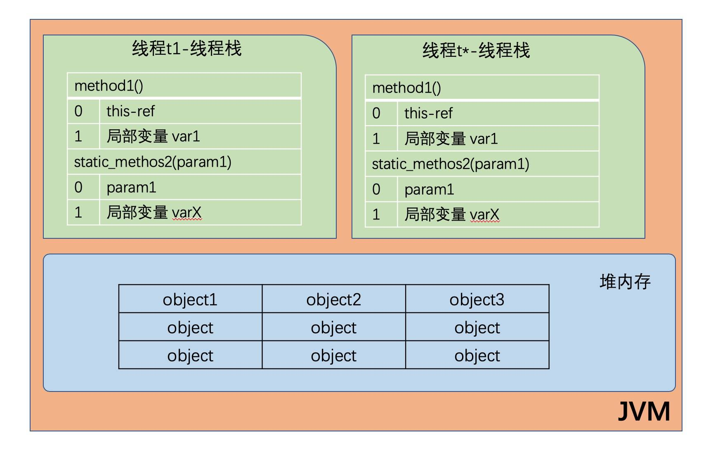
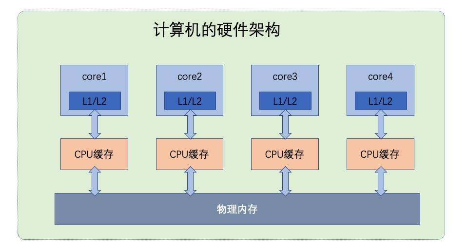

- 01 阅读此专栏的正确姿势.md.html
- 02 环境准备：千里之行，始于足下.md.html
- 03 常用性能指标：没有量化，就没有改进.md.html
- 04 JVM 基础知识：不积跬步，无以至千里.md.html
- 05 Java 字节码技术：不积细流，无以成江河.md.html
- 06 Java 类加载器：山不辞土，故能成其高.md.html
- 07 Java 内存模型：海不辞水，故能成其深.md.html
- 08 JVM 启动参数详解：博观而约取、厚积而薄发.md.html
- 09 JDK 内置命令行工具：工欲善其事，必先利其器.md.html
- 10 JDK 内置图形界面工具：海阔凭鱼跃，天高任鸟飞.md.html
- 11 JDWP 简介：十步杀一人，千里不留行.md.html
- 12 JMX 与相关工具：山高月小，水落石出.md.html
- 13 常见的 GC 算法（GC 的背景与原理）.md.html
- 14 常见的 GC 算法（ParallelCMSG1）.md.html
- 15 Java11 ZGC 和 Java12 Shenandoah 介绍：苟日新、日日新、又日新.md.html
- 16 Oracle GraalVM 介绍：会当凌绝顶、一览众山小.md.html
- 17 GC 日志解读与分析（基础配置）.md.html
- 18 GC 日志解读与分析（实例分析上篇）.md.html
- 19 GC 日志解读与分析（实例分析中篇）.md.html
- 20 GC 日志解读与分析（实例分析下篇）.md.html
- 21 GC 日志解读与分析（番外篇可视化工具）.md.html
- 22 JVM 的线程堆栈等数据分析：操千曲而后晓声、观千剑而后识器.md.html
- 23 内存分析与相关工具上篇（内存布局与分析工具）.md.html
- 24 内存分析与相关工具下篇（常见问题分析）.md.html
- 25 FastThread 相关的工具介绍：欲穷千里目，更上一层楼.md.html
- 26 面临复杂问题时的几个高级工具：它山之石，可以攻玉.md.html
- 27 JVM 问题排查分析上篇（调优经验）.md.html
- 28 JVM 问题排查分析下篇（案例实战）.md.html
- 29 GC 疑难情况问题排查与分析（上篇）.md.html
- 30 GC 疑难情况问题排查与分析（下篇）.md.html
- 31 JVM 相关的常见面试问题汇总：运筹策帷帐之中，决胜于千里之外.md.html
- 32 应对容器时代面临的挑战：长风破浪会有时、直挂云帆济沧海.md.html
- 捐赠
07 Java 内存模型：海不辞水，故能成其深
了解计算机历史的同学应该知道，计算机刚刚发明的时候，是没有内存这个概念的，速度慢到无法忍受。 直到冯诺依曼提出了一个天才的设计才解决了这个问题，没错，这个设计就是加了内存，所以现代的电子计算机又叫做“冯诺依曼机”。
JVM 是一个完整的计算机模型，所以自然就需要有对应的内存模型，这个模型被称为 “Java 内存模型”，对应的英文是“Java Memory Model”，简称 JMM。
Java 内存模型规定了 JVM 应该如何使用计算机内存（RAM）。 广义来讲， Java 内存模型分为两个部分：
- JVM 内存结构
- JMM 与线程规范
其中，JVM 内存结构是底层实现，也是我们理解和认识 JMM 的基础。 大家熟知的堆内存、栈内存等运行时数据区的划分就可以归为 JVM 内存结构。
就像很多神书讲 JVM 开篇就讲怎么编译 JVM 一样，讲 JMM 一上来就引入 CPU 寄存器的同步机制。虽然看起来高大上、显得高深莫测，但是大家很难理解。
所以我们这节课先从基础讲起，避开生涩的一些过于底层的术语，学习基本的 JVM 内存结构。理解了这些基本的知识点，然后再来学习 JMM 和线程相关的知识。
6.1 JVM 内存结构
我们先来看看 JVM 整体的内存概念图：
JVM 内部使用的 Java 内存模型， 在逻辑上将内存划分为 线程栈（thread stacks）和堆内存 （heap）两个部分。 如下图所示：

JVM 中，每个正在运行的线程，都有自己的线程栈。 线程栈包含了当前正在执行的方法链/调用链上的所有方法的状态信息。
所以线程栈又被称为“方法栈”或“调用栈”（call stack）。线程在执行代码时，调用栈中的信息会一直在变化。
线程栈里面保存了调用链上正在执行的所有方法中的局部变量。
- 每个线程都只能访问自己的线程栈。
- 每个线程都不能访问(看不见)其他线程的局部变量。
即使两个线程正在执行完全相同的代码，但每个线程都会在自己的线程栈内创建对应代码中声明的局部变量。 所以每个线程都有一份自己的局部变量副本。
- 所有原生类型的局部变量都存储在线程栈中，因此对其他线程是不可见的。
- 线程可以将一个原生变量值的副本传给另一个线程，但不能共享原生局部变量本身。
- 堆内存中包含了 Java 代码中创建的所有对象，不管是哪个线程创建的。 其中也涵盖了包装类型（例如
Byte，Integer，Long等）。 - 不管是创建一个对象并将其赋值给局部变量， 还是赋值给另一个对象的成员变量， 创建的对象都会被保存到堆内存中。
下图演示了线程栈上的调用栈和局部变量，以及存储在堆内存中的对象：

- 如果是原生数据类型的局部变量，那么它的内容就全部保留在线程栈上。
- 如果是对象引用，则栈中的局部变量槽位中保存着对象的引用地址，而实际的对象内容保存在堆中。
- 对象的成员变量与对象本身一起存储在堆上, 不管成员变量的类型是原生数值，还是对象引用。
- 类的静态变量则和类定义一样都保存在堆中。
总结一下：原始数据类型和对象引用地址在栈上；对象、对象成员与类定义、静态变量在堆上。
堆内存又称为“共享堆”，堆中的所有对象，可以被所有线程访问, 只要他们能拿到对象的引用地址。
- 如果一个线程可以访问某个对象时，也就可以访问该对象的成员变量。
- 如果两个线程同时调用某个对象的同一方法，则它们都可以访问到这个对象的成员变量，但每个线程的局部变量副本是独立的。
示意图如下所示：

总结一下：虽然各个线程自己使用的局部变量都在自己的栈上，但是大家可以共享堆上的对象，特别地各个不同线程访问同一个对象实例的基础类型的成员变量，会给每个线程一个变量的副本。
6.2 栈内存的结构
根据以上内容和对 JVM 内存划分的理解，制作了几张逻辑概念图供大家参考。
先看看栈内存(Stack)的大体结构：

每启动一个线程，JVM 就会在栈空间栈分配对应的线程栈, 比如 1MB 的空间（-Xss1m）。
线程栈也叫做 Java 方法栈。 如果使用了 JNI 方法，则会分配一个单独的本地方法栈(Native Stack)。
线程执行过程中，一般会有多个方法组成调用栈(Stack Trace), 比如 A 调用 B，B 调用 C……每执行到一个方法，就会创建对应的栈帧(Frame)。

栈帧是一个逻辑上的概念，具体的大小在一个方法编写完成后基本上就能确定。
比如 返回值 需要有一个空间存放吧，每个局部变量都需要对应的地址空间，此外还有给指令使用的 操作数栈，以及 class 指针(标识这个栈帧对应的是哪个类的方法, 指向非堆里面的 Class 对象）。
6.3 堆内存的结构
Java 程序除了栈内存之外，最主要的内存区域就是堆内存了。

堆内存是所有线程共用的内存空间，理论上大家都可以访问里面的内容。
但 JVM 的具体实现一般会有各种优化。比如将逻辑上的 Java 堆,划分为堆(Heap)和非堆(Non-Heap)两个部分.。这种划分的依据在于，我们编写的 Java 代码，基本上只能使用 Heap 这部分空间，发生内存分配和回收的主要区域也在这部分，所以有一种说法，这里的 Heap 也叫 GC 管理的堆(GC Heap)。
GC 理论中有一个重要的思想，叫做分代。 经过研究发现，程序中分配的对象，要么用过就扔，要么就能存活很久很久。
因此，JVM 将 Heap 内存分为年轻代（Young generation）和老年代（Old generation, 也叫 Tenured）两部分。
年轻代还划分为 3 个内存池，新生代(Eden space)和存活区(Survivor space), 在大部分 GC 算法中有 2 个存活区(S0, S1)，在我们可以观察到的任何时刻，S0 和 S1 总有一个是空的, 但一般较小，也不浪费多少空间。
具体实现对新生代还有优化，那就是 TLAB(Thread Local Allocation Buffer), 给每个线程先划定一小片空间，你创建的对象先在这里分配，满了再换。这能极大降低并发资源锁定的开销。
Non-Heap 本质上还是 Heap，只是一般不归 GC 管理，里面划分为 3 个内存池。
- Metaspace, 以前叫持久代(永久代, Permanent generation), Java8 换了个名字叫 Metaspace. Java8 将方法区移动到了 Meta 区里面，而方法又是class的一部分和 CCS 交叉了?
- CCS, Compressed Class Space, 存放 class 信息的，和 Metaspace 有交叉。
- Code Cache, 存放 JIT 编译器编译后的本地机器代码。
JVM 的内存结构大致如此。 掌握了这些基础知识，我们再来看看 JMM。
6.4 CPU 指令
我们知道，计算机按支持的指令大致可以分为两类：
精简指令集计算机(RISC), 代表是如今大家熟知的 ARM 芯片，功耗低，运算能力相对较弱。复杂指令集计算机(CISC), 代表作是 Intel 的 X86 芯片系列，比如奔腾，酷睿，至强，以及 AMD 的 CPU。特点是性能强劲，功耗高。（实际上从奔腾 4 架构开始，对外是复杂指令集，内部实现则是精简指令集，所以主频才能大幅度提高）
写过程序的人都知道，同样的计算，可以有不同的实现方式。 硬件指令设计同样如此，比如说我们的系统需要实现某种功能，那么复杂点的办法就是在 CPU 中封装一个逻辑运算单元来实现这种的运算，对外暴露一个专用指令。
当然也可以偷懒，不实现这个指令，而是由程序编译器想办法用原有的那些基础的，通用指令来模拟和拼凑出这个功能。那么随着时间的推移，实现专用指令的 CPU 指令集就会越来越复杂, ，被称为复杂指令集。 而偷懒的 CPU 指令集相对来说就会少很多，甚至砍掉了很多指令，所以叫精简指令集计算机。
不管哪一种指令集，CPU 的实现都是采用流水线的方式。如果 CPU 一条指令一条指令地执行，那么很多流水线实际上是闲置的。简单理解，可以类比一个 KFC 的取餐窗口就是一条流水线。于是硬件设计人员就想出了一个好办法： “指令乱序”。 CPU 完全可以根据需要，通过内部调度把这些指令打乱了执行，充分利用流水线资源，只要最终结果是等价的，那么程序的正确性就没有问题。但这在如今多 CPU 内核的时代，随着复杂度的提升，并发执行的程序面临了很多问题。

CPU 是多个核心一起执行，同时 JVM 中还有多个线程在并发执行，这种多对多让局面变得异常复杂，稍微控制不好，程序的执行结果可能就是错误的。
6.5 JMM 背景
目前的 JMM 规范对应的是 “JSR-133. Java Memory Model and Thread Specification” ，这个规范的部分内容润色之后就成为了《Java语言规范》的 $17.4. Memory Model章节。可以看到，JSR133 的最终版修订时间是在 2014 年，这是因为之前的 Java 内存模型有些坑，所以在 Java 1.5 版本的时候进行了重新设计，并一直沿用到今天。
JMM 规范明确定义了不同的线程之间，通过哪些方式，在什么时候可以看见其他线程保存到共享变量中的值；以及在必要时，如何对共享变量的访问进行同步。这样的好处是屏蔽各种硬件平台和操作系统之间的内存访问差异，实现了 Java 并发程序真正的跨平台。
随着 Java 在 Web 领域的大规模应用，为了充分利用多核的计算能力，多线程编程越来越受欢迎。这时候就出现很多线程安全方面的问题。想要真正掌握并发程序设计，则必须要理解 Java 内存模型。可以说，我们在 JVM 内存结构中学过的堆内存、栈内存等知识，以及 Java 中的同步、锁、线程等等术语都和JMM 有非常大的关系。
6.6 JMM 简介
JVM 支持程序多线程执行，每个线程是一个 Thread，如果不指定明确的同步措施，那么多个线程在访问同一个共享变量时，就看会发生一些奇怪的问题，比如 A 线程读取了一个变量 a=10，想要做一个只要大于9就减2的操作，同时 B 线程先在 A 线程操作前设置 a=8，其实这时候已经不满足 A 线程的操作条件了，但是 A 线程不知道，依然执行了 a-2，最终 a=6；实际上 a 的正确值应该是 8，这个没有同步的机制在多线程下导致了错误的最终结果。
这样一来，就需要 JMM 定义多线程执行环境下的一些语义问题，也就是定义了哪些方式是允许的。
下面我们简要介绍一下 JMM 规范里有些什么内容。
给定一个程序和该程序的一串执行轨迹，内存模型描述了该执行轨迹是否是该程序的一次合法执行。对于 Java，内存模型检查执行轨迹中的每次读操作，然后根据特定规则，检验该读操作观察到的写是否合法。 内存模型描述了某个程序的可能行为。JVM 实现可以自由地生成想要的代码，只要该程序所有最终执行产生的结果能通过内存模型进行预测。这为大量的代码转换提供了充分的自由，包括动作（action）的重排序以及非必要的同步移除。 内存模型的一个高级、非正式的表述”显示其是一组规则，规定了一个线程的写操作何时会对另一个线程可见”。通俗地说，读操作 r 通常能看到任何写操作 w 写入的值，意味着 w 不是在 r 之后发生，且 w 看起来没有被另一个写操作 w’ 覆盖掉（从 r 的角度看）。
JMM 定义了一些术语和规定，大家略有了解即可。
- 能被多个线程共享使用的内存称为“
共享内存”或“堆内存”。 - 所有的对象(包括内部的实例成员变量)，static 变量，以及数组，都必须存放到堆内存中。
- 局部变量，方法的形参/入参，异常处理语句的入参不允许在线程之间共享，所以不受内存模型的影响。
- 多个线程同时对一个变量访问时【读取/写入】，这时候只要有某个线程执行的是写操作，那么这种现象就称之为“冲突”。
- 可以被其他线程影响或感知的操作，称为线程间的交互行为， 可分为： 读取、写入、同步操作、外部操作等等。 其中同步操作包括：对 volatile 变量的读写，对管程(monitor)的锁定与解锁，线程的起始操作与结尾操作，线程启动和结束等等。 外部操作则是指对线程执行环境之外的操作，比如停止其他线程等等。
JMM 规范的是线程间的交互操作，而不管线程内部对局部变量进行的操作。
有兴趣的同学可参阅: ifeve 翻译的: JSR133 中文版.pdf
6.7 内存屏障简介
前面提到了CPU会在合适的时机，按需要对将要进行的操作重新排序，但是有时候这个重排机会导致我们的代码跟预期不一致。
怎么办呢？JMM 引入了内存屏障机制。
内存屏障可分为读屏障和写屏障，用于控制可见性。 常见的 内存屏障 包括：
#LoadLoad
#StoreStore
#LoadStore
#StoreLoad
这些屏障的主要目的，是用来短暂屏蔽 CPU 的指令重排序功能。 和 CPU 约定好，看见这些指令时，就要保证这个指令前后的相应操作不会被打乱。
- 比如看见
#LoadLoad, 那么屏障前面的 Load 指令就一定要先执行完，才能执行屏障后面的 Load 指令。 - 比如我要先把 a 值写到 A 字段中，然后再将 b 值写到 B 字段对应的内存地址。如果要严格保障这个顺序,那么就可以在这两个 Store 指令之间加入一个
#StoreStore屏障。 - 遇到
#LoadStore屏障时, CPU 自废武功，短暂屏蔽掉指令重排序功能。 #StoreLoad屏障, 能确保屏障之前执行的所有 store 操作，都对其他处理器可见; 在屏障后面执行的 load 指令, 都能取得到最新的值。换句话说, 有效阻止屏障之前的 store 指令，与屏障之后的 load 指令乱序 、即使是多核心处理器，在执行这些操作时的顺序也是一致的。
代价最高的是 #StoreLoad 屏障, 它同时具有其他几类屏障的效果，可以用来代替另外三种内存屏障。
如何理解呢?
就是只要有一个 CPU 内核收到这类指令，就会做一些操作，同时发出一条广播, 给某个内存地址打个标记，其他 CPU 内核与自己的缓存交互时，就知道这个缓存不是最新的，需要从主内存重新进行加载处理。
小结
本节我们讲解了JMM的一系列知识，让大家能够了解Java的内存模型，包括：
- JVM 的内存区域分为:
堆内存和栈内存； - 堆内存的实现可分为两部分:
堆(Heap)和非堆(Non-Heap); - 堆主要由 GC 负责管理，按分代的方式一般分为: 老年代+年轻代；年轻代=新生代+存活区；
- CPU 有一个性能提升的利器:
指令重排序； - JMM 规范对应的是 JSR133, 现在由 Java 语言规范和 JVM 规范来维护；
- 内存屏障的分类与作用。
参考链接
© 2019 - 2023 Liangliang Lee. Powered by gin and hexo-theme-book.